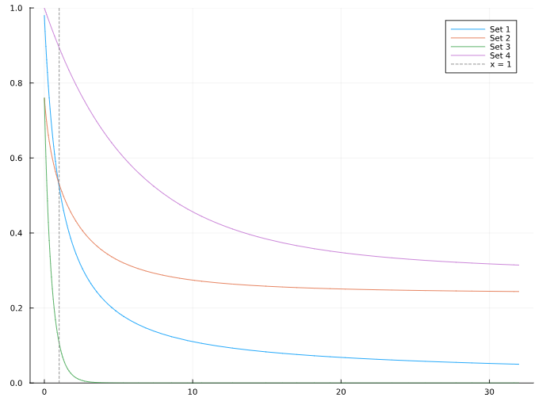

Mathematical Formulation
Given a list of $m$ numbers $1 \geq p_1 \geq p_2 \geq \cdots \geq p_m \geq 0$ (e.g., a renewable energy production profile), and a target value $\mu \in (0, 1)$, we are looking for a solution to
\[\frac{1}{m}\sum_{i=1}^m p_i^x = \mu.\]
Questions:
- When is it possible to find such $x$?
- If such $x$ exists, how do we find it?
- What to do when it is not possible to find such $x$?
Since both $p_i$ and $x$ can be zero, $p_i^x$ can be undefined. In Julia, and other programming languages, $0^0$ is commonly defined as 1. However, it doesn't make sense for the fitting profile application since the $p_i$ values are fixed, and $x$ is variable. Therefore, we define $\sigma:[0,1]\times[0,\infty)$ as:
\[\sigma(p, x) = \left\{\begin{array}{ll}p^x, \ & \text{if } p > 0, \\ 0, \ & \text{otherwise}.\end{array}\right.\]
This allows $x \mapsto \sigma(p, x)$ to be continuous for any value $p \in [0, 1]$.
Therefore, the problem can be redefined as finding $x$ such that
\[\frac{1}{m}\sum_{i=1}^m \sigma(p_i, x) = \mu.\]
However, to avoid this notation, we can assume, without loss of generality, that there are $r$ non-zero $p_i$, i.e., $p_1 \geq \cdots \geq p_r > 0$, and $p_{r+1} = \cdots = p_m = 0$.
This simplifies the problem to finding $x$ such that
\[\frac{1}{m} \sum_{i=1}^r p_i^x = \mu.\]
Let's define $S(x) = \frac{1}{m}\sum_{i=1}^r p_i^x$ to help us with the notation.
To visualize the problem, we are going to use four sets of possible profile values:
- a set with a 0 and a 1
- a set with a lot of 0s and 1s (25% each)
- a set that only contains numbers from 0 to $\alpha < 0.5$.
- a set that only contains numbers from $1 - \alpha$ to 1.
First, let's visualize the effect of $p_i^x$ on these sets. The figure below displays the original values in lightblue, sorted from the maximum to the minimum. The mean value of the original data is indicated in blue. Furthermore, the value for $x=0.5$ is indicated in pink, and the new mean is depicted in red.

Furthermore, let's take a look at the plot of $S$ for each of the sets.

Question 1: Since $p^0 = 1$ for positive $p$, then $S(0) = \frac{r}{m}$. $S$ is non-increasing since
\[S'(x) = \frac{1}{m} \sum_{i=1}^r p_i^x \ln p_i \leq 0.\]
And assuming that there are $n$ values such that $p_i = 1$, then
\[\lim_{x \to \infty} S(x) = \frac{n}{m}.\]
This means that there is a solution to the problem if $\dfrac{n}{m} < \mu \leq \dfrac{r}{m}$.
Question 2: Assuming $S$ decreasing and $\mu$ in range, we can solve the problem by looking for an interval $[a, b]$ such that $S(x) - \mu$ changes sign. This can be done by creating an increasing sequence of points $v_1, v_2, \dots$, such that $v_1 = 0$, and $v_{i+1} > v_i$ with $\lim_{i \to \infty} v_i = \infty$. For instance, the sequence $0, 1, 2, 4, 8, \dots$.
Since $S$ is decreasing, and $\mu$ is in range, then either $S(v_i) = \mu$ for some $v_i$, or $S(x) - \mu$ will change sign in some interval $[v_i, v_{i+1}]$.
Given the interval, we perform a bisection search or similar.
Question 3: If $\mu > \dfrac{r}{m}$, then $x = 0$ will yield $S(0) = \dfrac{r}{m}$, which is the closest to $\mu$.
Alternatively, if $\mu \leq \dfrac{n}{m}$, then $S(x) \to \dfrac{n}{m}$ as $x \to \infty$. In this case, we just select a reasonably large value for $x$.
The graph below displays the results of each set with a target mean of $\mu = 0.65$. The plots on the left-hand side highlight the target value in red. Meanwhile, the plots on the right-hand side depict the interval $\dfrac{n}{m} < \mu \leq \dfrac{r}{m}$. We can observe that the function S of each set of values intersects with the target value.